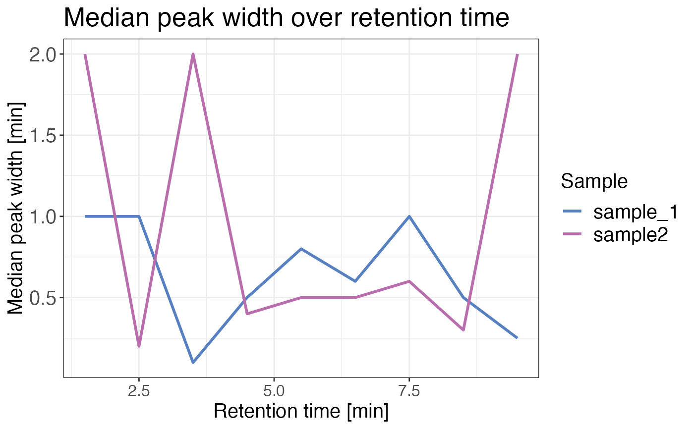

Plots one minute binned median precursor elution peak width over retention time for each sample.
qc_peak_width(
data,
sample,
intensity,
retention_time,
peak_width = NULL,
retention_time_start = NULL,
retention_time_end = NULL,
remove_na_intensities = TRUE,
interactive = FALSE
)a data frame containing at least sample names and protein IDs.
a character column in the data data frame that contains the sample names.
a numeric column in the data data frame that contains intensities. If
remove_na_intensities = FALSE, this argument is not required.
a numeric column in the data data frame that contains retention
times of precursors.
a numeric column in the data data frame that contains peak width
information. It is not required if retention_time_start and retention_time_end
columns are provided.
a numeric column in the data data frame that contains the
start time of the precursor elution peak. It is not required if the peak_width column
is provided.
a numeric column in the data data frame that contains the end
time of the precursor elution peak. It is not required if the peak_width column is
provided.
a logical value that specifies if sample/grouping combinations with intensities that are NA (not quantified IDs) should be dropped from the data frame. Default is TRUE since we are usually interested in the peak width of quantifiable data.
a logical value that specifies whether the plot should be interactive (default is FALSE).
A line plot displaying one minute binned median precursor elution peak width over retention time for each sample.
data <- data.frame(
r_file_name = c(rep("sample_1", 10), rep("sample2", 10)),
fg_quantity = c(rep(2000, 20)),
eg_mean_apex_rt = c(rep(c(1, 2, 3, 4, 5, 6, 7, 8, 9, 10), 2)),
eg_start_rt = c(0.5, 1, 3, 4, 5, 6, 7, 7.5, 8, 9, 1, 2, 2, 3, 4, 5, 5, 8, 9, 9),
eg_end_rt = c(
1.5, 2, 3.1, 4.5, 5.8, 6.6, 8, 8, 8.4,
9.1, 3, 2.2, 4, 3.4, 4.5, 5.5, 5.6, 8.3, 10, 12
)
)
qc_peak_width(
data,
sample = r_file_name,
intensity = fg_quantity,
retention_time = eg_mean_apex_rt,
retention_time_start = eg_start_rt,
retention_time_end = eg_end_rt
)
